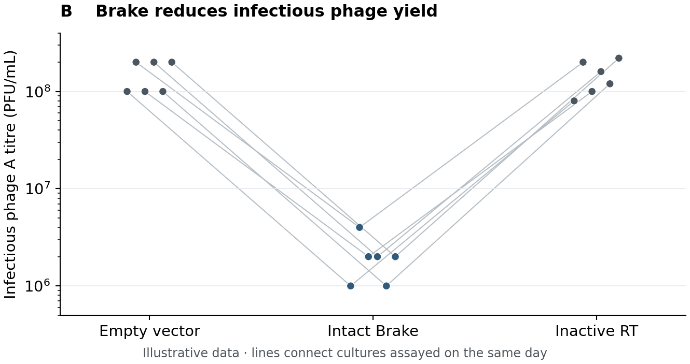

Methods, results and figure legends
Draft Methods from the experimental records and analysis code, Results from the figures, and legends alongside each display. As you write, check that all three describe the same samples, measurements and comparisons. A change to the analysis may require a correction in each place. [1]; [2].
The examples continue the fictional Brake study, inspired by Tang and colleagues (2024) [12].
Plan what readers need
Where details belong
Place details according to the question they answer. [3]; [4].
Where the information belongs
| Component | Main question | Information to provide |
|---|---|---|
| Methods | How was the evidence obtained? | Design, materials, procedures, measurements, processing and analysis choices needed to evaluate and reproduce the work. |
| Results | What did the study find? | The question or comparison, principal finding, quantitative support and qualifications that affect its interpretation. |
| Figure legend | What am I looking at? | Figure topic, panel descriptions, experimental context, visual encodings and statistical details needed to read the display. |
The same treatment may need three different descriptions: how it was applied in Methods, what it changed in Results, and which marks represent it in the figure legend. Give readers the context they need at each point, while describing the full protocol once. [2]; [5].
Choose how much detail to include
State which population was sampled and what was compared, even for a specialist audience. Define scores developed for the study. Before describing an unfamiliar analysis, explain the question it answers so readers know why you used it. [3]; [6].
Use prose for procedures and reasons, tables for repeated fields, and a schematic when several inputs follow different paths into an analysis. Keep exact settings in Methods. [4].
Supporting material can hold detailed procedures and extended analyses. Keep the evidence essential to the main conclusion accessible in the paper, with precise references to supporting displays and controls. [3].
Write reproducible Methods
Organizing Methods
Begin with the design and materials, then describe measurement, processing and analysis. Within a procedure, preserve the order of operations; across procedures, group shared methods so readers encounter each protocol once. [7]; [8]. Open each subsection with its purpose or material, explaining unusual choices that affect interpretation before describing the steps. [4].
Write completed work in the past tense, choosing the subject that makes the procedure easiest to follow. Active sentences often clarify responsibility; passive wording works when the sample or procedure is the natural subject. [6]; [4]. Have contributing authors check the account against their records and final code, including the steps where data passed between collaborators. [1]; [2].
Include the details that determine the outcome
Identify the materials or datasets and their sources, inclusion criteria, conditions and controls. Give laboratory settings needed to repeat the procedure, and identify datasets by accession or durable reference and relevant release. A table can collect reagent or dataset identities; the prose should explain how they were used. [2]; [7].
Consult study-specific reporting requirements for additional details. Obtain details of the required ethics approvals and compliance information from the responsible investigators, identifying the samples or procedures they cover. [2]; [7].
Describe how samples were allocated, when measurements were taken and how randomization or blinding operated when used. If a safeguard was absent, report that accurately and assess its effect on the conclusion. [9].
For an established protocol, cite the version used and describe what you changed. The phrase “with minor modifications” does not tell someone repeating the work which steps to follow. [7]; [2]. For computational procedures, report filtering, reference annotations, normalization and thresholds because they can affect the result. Routine file-handling operations usually need no description. [2]; [4].
Example: describing a matched comparison
The Brake study compares infectious phage output across three bacterial genotypes. The values and design details below are invented for teaching. This excerpt covers titre calculation and analysis; the host, constructs, infection conditions and collection protocol would be specified elsewhere in Methods.
Infectious-titre analysis
We compared empty-vector cultures, cultures carrying intact Brake and cultures carrying Brake with a catalytically inactive reverse transcriptase. On each of six experimental days, one independently started culture of each genotype was infected with phage A and sampled at the same endpoint.
For each culture, we estimated infectious titre in plaque-forming units per millilitre (PFU/mL) from technical duplicate plaque counts, accounting for the plated volumes and dilution factors. We combined the duplicate measurements into one culture-level estimate.
The primary comparison was intact Brake versus empty vector, matched by experimental day. We divided the intact-Brake titre by the empty-vector titre within each day and took the log10 of that ratio. We estimated the mean log10 ratio and its two-sided 95% confidence interval using a Student t distribution with five degrees of freedom. We exponentiated the estimate and interval limits to obtain a geometric mean titre ratio. Fold reduction was its reciprocal, with the interval limits inverted accordingly. The inactive reverse-transcriptase measurements were displayed as a mechanistic control.
What to notice. Each day contributes one matched contrast. Duplicate plates improve the measurement of a culture; they do not double the sample size. The analysis is specified for the between-genotype effect, rather than inferred from separate error bars on each group.
Describe the analysis from input to inference
Describe how the input becomes the reported result. Identify the input data and version, then explain processing in order, naming the software and settings that affect the output. For genomic analyses, give the reference assembly. State what the final comparison or model estimates. Readers should be able to follow that account in Methods without having to reconstruct it from the code. [2]; [6].
Explain selection and exclusion before presenting findings from the selected data. State how samples, genes, cells or regions entered the analysis and how many remained where counts affect interpretation. Distinguish prespecified decisions from choices made after inspecting the results. A subset selected because it shows the desired effect cannot also supply an independent test of that effect. Report exploratory analyses as exploratory and describe any separate data used for confirmation. [9].
Name the statistical comparison, not merely the software command. Describe the outcome, explanatory variables and relevant pairing or grouping; state how uncertainty was estimated and how multiple testing was handled when many comparisons were made. If different panels use different analyses, make those assignments clear. [7]; [2]; [9].
Identify the data and code in durable repository records, subject to applicable access restrictions. Prepare those records early and specify the version or retrieval date for changing datasets. [2]; [6].
Make the sampling and replication clear
Explain which samples were independently collected or treated and which measurements came from each. Hundreds of cells from one culture describe that culture more thoroughly, but do not establish consistency across independent cultures. Individual cells can be independent treatment units when the design assigns them that way and supports their independence. [10].
Give sample sizes with their meaning: independent cultures, repeated readings or analysis runs. Where the study has more than one level, report the counts and their relationship, including exclusions. In the Brake example, there are six cultures per genotype, each measured on duplicate plates, and the primary effect is estimated from six contrasts matched by day. [10]; [9].
Preserve that structure in both the analysis and its description. State whether the comparison uses sample summaries or a model that accounts for measurements nested within samples. Identify pairing when corresponding control and treatment observations belong to the same experimental run. A display can show individual observations and sample summaries together, provided the legend distinguishes them and identifies the unit used for statistical inference. [10].
Present results as an argument
Order findings by what they establish
Introduce each result before relying on it. In the Brake study, identifying the protein-coding DNA product prepares the experiment that tests the protein’s role. Presenting that test first would leave readers unsure why the protein was chosen. [3]; [6].
Use finding-based Results headings when one statement covers the evidence. “The Brake protein mediates phage restriction” is more informative than “Protein experiments.” A descriptive heading suits a resource, procedure or unresolved comparison. Read the heading with the figure title to check that the written claim and display answer the same question. [2].
One figure may support several paragraphs, and a claim may draw on several figures. Refer to the panels that support each finding and give the values needed to explain it. [2]; [3].
Build a paragraph around a finding
Build the paragraph around a finding, bringing together observations that support it. Briefly introduce the question and approach for an unfamiliar experiment; begin with the finding when the comparison is already clear. Name the treatment, comparison and outcome, then give the evidence, panel reference and any necessary qualification. Keep the full procedure in Methods. [8]; [2].
When introducing the next experiment, explain what you still needed to find out after the previous result. You do not need to repeat the paper’s broad motivation. [4]; [6]. Explain what each result supports where readers need that connection to follow the next experiment. Reserve extended literature comparisons and broader implications for Discussion. If Results and Discussion are combined, still distinguish the observations from your proposed explanations. [3]; [4].
A closing interpretation is useful when it connects several observations or motivates the next experiment. If the paragraph has already made and supported its point, move on without restating it. [6].
Report magnitude, comparison and uncertainty
State what changed, relative to what and by how much, with units and the scale of comparison. Give the important difference or proportion explicitly. The display or underlying data can carry the remaining values. [6]; [3].
Report the estimate together with appropriate uncertainty and, where used, the statistical test result. A small p-value cannot convey the magnitude of an effect, and “significant” alone does not tell readers its direction or biological importance. Distinguish variability among observations from uncertainty in an estimated effect. Make clear whether an interval describes a group mean, a between-group contrast or another quantity. [7]; [9]; [10].
A claim that two effects differ needs a direct comparison between them. A significant response in one condition and a non-significant response in another can occur even when their estimated effects are similar, because the estimates have different precision. Separate significance tests do not answer the comparative question. [9].
Name what was measured before giving its biological interpretation. In the Brake example below, the measurement is endpoint infectious titre; the interpretation concerns phage restriction. [6].
Example: reporting a quantitative finding
Endpoint infectious titres were compared within each experimental day, as described in the Methods above.
Brake reduced infectious phage A output. Across six experimental days, the geometric mean of the day-matched titre ratios indicated a 79-fold reduction with intact Brake relative to the empty-vector control (95% confidence interval, 55–116-fold; Figure 1B). Cultures carrying the inactive reverse transcriptase retained high phage titres. These results support a requirement for reverse-transcriptase activity in phage restriction.
What to notice. The interval belongs to the fold reduction. The final sentence gives a local interpretation of the control; it does not identify which downstream product causes defence. That question motivates Figures 2 and 3.
A lower endpoint titre is not automatically a smaller burst size per infected cell. Keep the result named after the quantity measured.
Negative and inconclusive findings
Report results that disagree with the prediction. State whether they provide evidence against it or are too imprecise to assess it. Also report controls that leave an alternative explanation unresolved. [9]; [3].
Give the estimated effect and uncertainty even when a test is non-significant. If you want to claim that any difference is too small to matter scientifically, specify how small it would need to be and whether the design and analysis can rule out larger differences. An inconclusive control leaves open the explanation it was intended to test. [9].
When an unexpected result prompts exploration, explain how that analysis arose and label it accordingly. Report what it establishes and which questions remain unresolved, preserving the distinction from the original test. [9].
Figure captions and legends
The figure caption, often called a figure legend, is the text beneath or alongside the display. Here, “legend” refers to that text rather than the key inside a plot. Include the conditions, label definitions and statistical details needed to understand the figure without searching the main text. [5]; [2].
Identify what each panel shows
Write the legend while looking at the figure. Begin with a concise title identifying its subject or principal finding, then describe the panels in their labeled order. Explain what readers are looking at before interpreting it: a schematic needs its relationships explained; an image needs the specimen, displayed signal and relevant scale; a quantitative plot needs the measured quantity and comparison. Add a brief finding when the journal permits and the title has not already conveyed it. [5]; [11].
Label figures directly where practical, using the legend to define remaining symbols, abbreviations and encodings. Describe shared conditions once and identify panel-specific exceptions. Use the same names for conditions in the legend and display. [5]; [2].
Make the statistical display interpretable
Identify sample sizes, what each plotted point represents, the summary statistic and the meaning of error bars or intervals. Distinguish individual observations from independent-sample summaries. [2]; [10].
State which comparison each test or annotation refers to. Include the test and relevant sidedness, pairing and multiple-comparison information where applicable, following the journal’s reporting format. For box plots, define the boxes, central line, whiskers and any separately plotted points. For normalized data, explain the reference used for normalization if it is needed to interpret the values. [2].
Keep the full analysis in Methods, but define the displayed samples and error bars in the legend. Shorten a long legend by describing shared procedures once. If the panels require unrelated explanations, consider whether they belong in separate figures. [5]; [2].
Example: a panel and its legend
This is the quantitative panel from Figure 1 in the Brake figure plan. It uses the same illustrative data as the Methods and Results passages above.
Original teaching figure; all plotted values are illustrative.

Figure 1B. Brake reduces infectious phage A yield. Endpoint titres from cultures carrying empty vector, intact Brake or Brake with a catalytically inactive reverse transcriptase (inactive RT). Each point represents one independently started culture; lines connect the three cultures assayed on the same day. Six days were measured, with technical duplicate plaque counts combined for each culture. The vertical axis is logarithmic. The geometric mean titre was 79-fold lower for intact Brake than for empty vector (95% confidence interval, 55–116-fold), calculated from the six day-matched log10 titre ratios.
A legend for the complete Figure 1 would also describe the construct schematic and growth curves in panels A and C.
Adapt the explanation to the publication stage
An initial legend can explain the figure’s takeaway to reviewers; some journals retain that style, while others require shorter descriptions for publication. [11]. Use a finding-based title when it accurately summarizes the figure and the journal permits it, or a descriptive title otherwise. When shortening the legend, move necessary procedural or interpretive detail to the appropriate Methods or Results passage while retaining what readers need to decode the display. [5]; [11].
Keep figures and legends together in a review copy when the submission format allows it. To test a legend, first give it to a colleague without the figure and ask them to sketch the panels they expect. Compare that sketch with the figure: a missing comparison, unexplained image or ambiguous panel identity tells you what to clarify. Then inspect the figure and legend together to check the labels and statistical details. [11].
Check reporting across text and figures
Check each result against its figure, legend, Methods and underlying analysis, following the same samples and comparison through to the reported numbers and interpretation. [2]; [3]. Contributing authors should verify technical details; a second reader can identify missing explanations or unclear figure labels that the authors overlook. [1]; [2].
Make the final pass on the assembled manuscript and supporting files, checking figure letters, units, terminology and statistical labels. Test data and code links, and carry each correction through all affected files. [1]; [6].
Reporting checklist
- Each result states a clear comparison and points to its supporting evidence.
- Methods identify the materials, design, procedures and analysis choices needed to follow the work.
- Selection, exclusions and exploratory decisions are reported where they affect inference.
- Sample counts distinguish independent units from measurements within them.
- Quantitative claims include the relevant magnitude and uncertainty, with suitable statistical support.
- Findings that limit the conclusion remain visible; inconclusive evidence retains its uncertainty.
- Legends identify the panels, conditions, encodings, summaries and statistical comparisons.
- Text, figures, legends, Methods and supporting files agree, and data/code access has been checked.